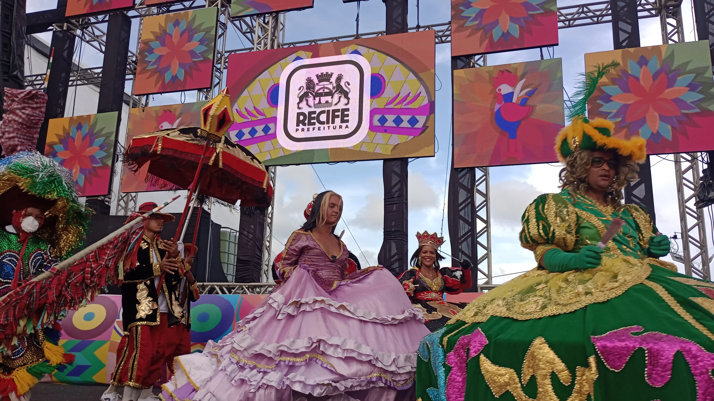
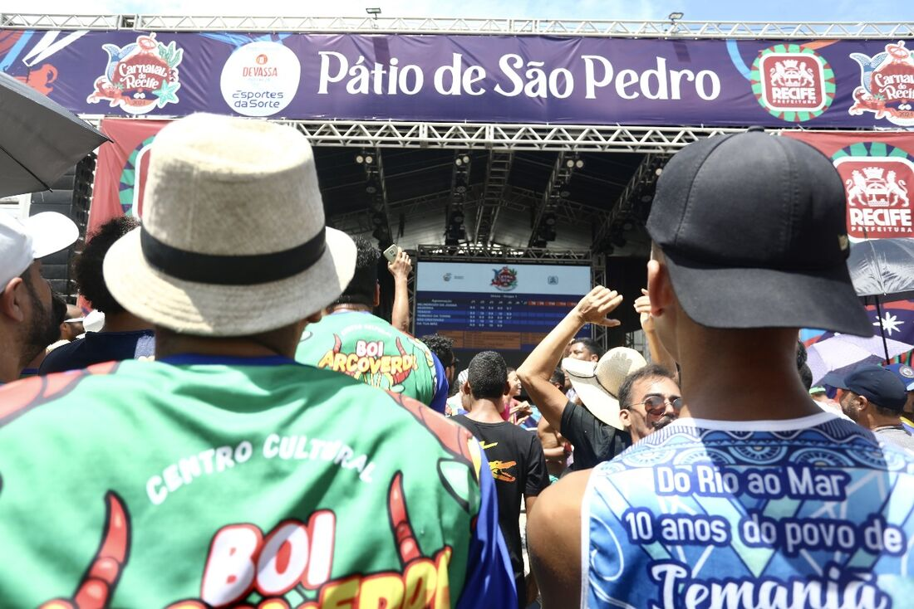

PREMIAÇõES E TÍTULOS

4 anos no grupo 1
- 2011
- 2014
- 2017
- 2023
- 2024

Patrimônio Cultural Imaterial
Vencedor do Prêmio Culturas Populares 2008 Humberto de Maracanã
Título de Utilidade Pública de Glória do Goitá-PE 2024.
Últimas Apresentações
2024
- 12 fev – Aliança (FUNDARPE)
- 13 fev – Marco Zero (Pref. Recife)
- 18 fev – Rua da Moeda (Pref. Recife)
2023
- 17 fev – Carnaval dos Bairros (Pref. Recife)
- 19 fev – Aliança (FUNDARPE)
- 20 fev – Condado (FUNDARPE)
- 21 fev – Buenos Aires (FUNDARPE)
2020
- 22 fev – Aliança (FUNDARPE)
- 24 fev – Condado (FUNDARPE)
- 25 fev – Buenos Aires (FUNDARPE)
